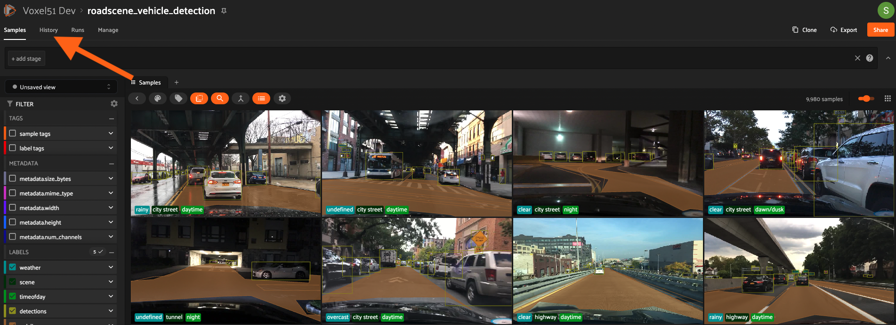
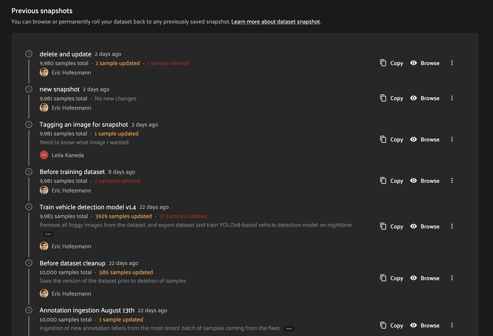
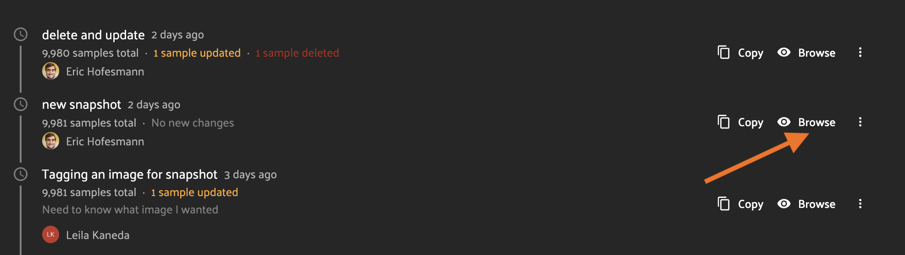
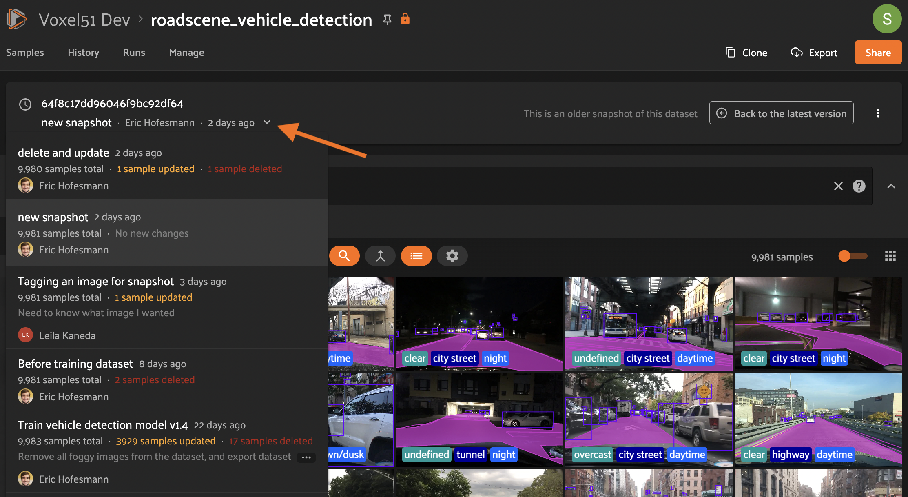
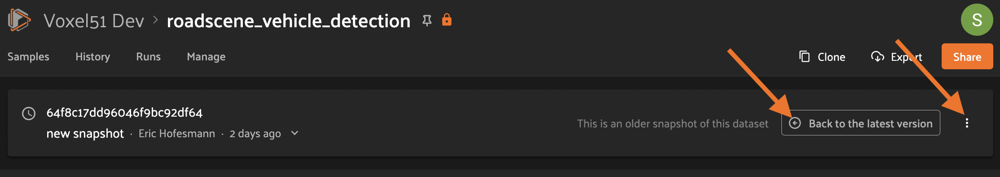
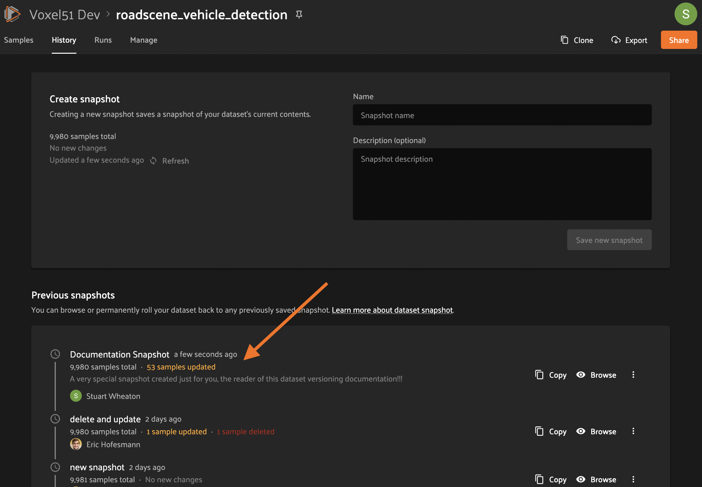
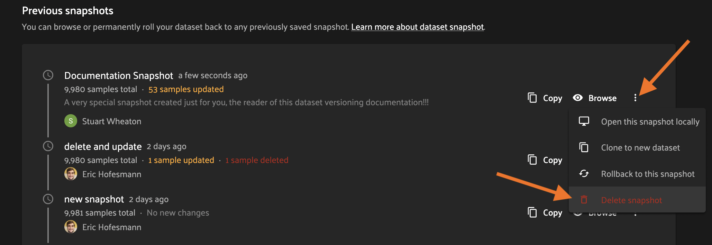
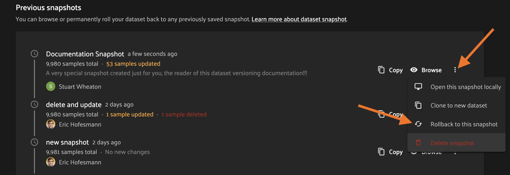
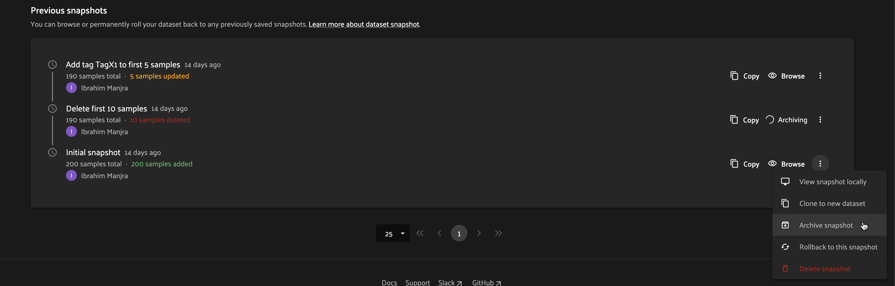
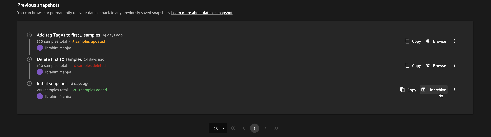

Dataset Versioning¶
FiftyOne Teams provides native support for versioning your datasets!
Dataset Versioning allows you to capture the state of your dataset in time so that it can be referenced in the future. This enables workflows like recalling particular important events in the dataset’s lifecycle (model trained, annotation added, etc) as well as helping to prevent accidental data loss.
Overview¶
Dataset Versioning in FiftyOne Teams is implemented as a linear sequence of read-only Snapshots. In other words, creating a new Snapshot creates a permanent record of the dataset’s contents that can be loaded and viewed at any time in the future, but not directly edited. Conversely, the current version of a dataset is called its HEAD (think git). If you have not explicitly loaded a Snapshot, you are viewing its HEAD, and you can make additions, updates, and deletions to the dataset’s contents as you normally would (provided you have sufficient permissions).
Snapshots record all aspects of your data stored within FiftyOne, including dataset-level information, schema, samples, frames, brain runs, and evaluations. However, Snapshots exclude any information stored in external services, such as media stored in cloud buckets or embeddings stored in an external vector database, which are assumed to be immutable. If you need to update the image for a sample in a dataset, for example, update the sample’s filepath—-which is tracked by snapshots—-rather than updating the media in cloud storage in-place—-which would not be tracked by snapshots. This design allows dataset snapshots to be as lightweight and versatile as possible.
Dataset Versioning has been built with an extensible architecture so that different versioning backends can be swapped in. Each backend may have different tradeoffs in terms of performance, storage, and deployment needs, so users should be able to choose the best fit for their needs. In addition, many users may already have a versioning solution external to FiftyOne Teams, and the goal is to support integration around those use cases as well.
Currently, only the internal duplication backend is available, but further improvements and implementing additional backend choices are on the roadmap.
Warning
Dataset Versioning is not a replacement for database backups. We strongly encourage the use of regular data backups and good storage maintenance processes.
Snapshots¶
Dataset Versioning in FiftyOne Teams is implemented as a linear history of Snapshots. A Snapshot captures the state of a dataset at a particular point in time as an immutable object. Compare this concept to creating commits and tags in a single branch of a version control system such as git or svn; a Snapshot is a commit and tag (including readable name, description, creator) all in one.
The current working version of the dataset (called the HEAD) can be edited by anyone with appropriate permissions, as normal. Since Snapshots include a commit-like operation, they can only be created on the dataset HEAD.
Snapshot states¶
Snapshots can be in a few different states of existence depending on deployment choices and user actions.
- Materialized Snapshot¶
A Snapshot whose state and contents are entirely materialized in the MongoDB database. The Snapshot is “ready to go” and be loaded instantly for analysis and visualization.
- Archived Snapshot¶
A materialized Snapshot that has been archived to cold storage to free up working space in the MongoDB instance. The Snapshot cannot be loaded by users until it is re-materialized into MongoDB. Since it is stored in its materialized form already though, an archived Snapshot can be re-materialized easily, at merely the cost of network transfer and MongoDB write latencies. See here for more.
- Virtual Snapshot¶
A Snapshot whose state and contents are stored by the pluggable backend versioning implementation in whatever way it chooses. In order to be loaded by FiftyOne Teams users, the Snapshot must be materialized into its workable form in MongoDB. This is done through a combination of the overarching versioning infrastructure and the specific versioning backend.
For a given Snapshot, the virtual form always exists. It may also be materialized, archived, or both (in the case that an archived Snapshot has been re-materialized but kept in cold storage also).
Note
With the internal duplication backend there is no distinction between materialized and virtual Snapshots since by definition the implementation uses materialized Snapshots as its method of storage.
Snapshot archival¶
Snapshot your datasets easier knowing your database won’t be overrun!
If your snapshots are important for historical significance but aren’t used very often, then you can consider archiving snapshots. This is especially helpful with the internal duplication backend where creating snapshots causes database storage to grow quickly!
When a snapshot is archived, all of its contents are stored in an archive in the configured cold storage location: either a mounted filesystem or cloud storage folder (using your deployment’s cloud credentials).
Note
Snapshots must be unarchived in order to browse them in the UI or load them with the SDK.
Automatic archival¶
If snapshot archival is enabled, snapshots will automatically be archived to make room for newer snapshots as necessary. This can be triggered when a snapshot is created or unarchived, which would then put the number of snapshots in the database above one of the configured limits.
If the total materialized snapshots limit is exceeded, then the snapshot that was least-recently loaded will be automatically archived.
If the materialized snapshots per-dataset limit is exceeded, then the snapshot within the dataset that was least-recently loaded will be archived.
Note
Some snapshots will not be chosen for automatic archival, even if they would otherwise qualify based on their last load time: the most recent snapshot for each dataset, and those that have been loaded within the configured age requirement.
If no snapshot can be automatically archived then the triggering event will report an error and fail. This can be fixed by deleting snapshots, manually archiving snapshots, or changing deployment configuration values.
Manual archival¶
Users with Can Manage permissions to a dataset can manually archive snapshots via the UI or management SDK.
Unarchival¶
While a snapshot is archived, you cannot browse it in the UI or load with the SDK.
To enable browsing or loading again, the snapshot can be unarchived via the UI or management SDK.
Usage notes¶
Note
If the most recent snapshot is archived then the latest changes in HEAD cannot be calculated and may be reported as unknown.
Note
If a snapshot is deleted, the change summary for the following snapshot must be recomputed against the previous snapshot. However, if either of these snapshots are currently archived then the change summary cannot be recomputed and may be reported as unknown.
Snapshot permissions¶
The table below shows the dataset permissions required to perform different Snapshot-related operations:
Snapshot Operation |
User Permissions on Dataset |
||
|---|---|---|---|
Can View |
Can Edit |
Can Manage |
|
Browse Snapshot in App |
✅ |
✅ |
✅ |
Load Snapshot in SDK |
✅ |
✅ |
✅ |
Create Snapshot |
✅ |
||
Delete Snapshot |
✅ |
||
Archive Snapshot |
✅ |
||
Unarchive Snapshot |
✅ |
✅ |
✅ |
Revert dataset to Snapshot |
✅ |
||
Edit Snapshot’s contents |
❌ |
❌ |
❌ |
Using snapshots¶
In contrast to a dataset’s HEAD, Snapshots are read-only. When viewing in the App, the UI is similar to interacting with a HEAD dataset, but users will not be able to make any edits to the objects. Similarly, when using the FiftyOne SDK, users will not be able to perform any operation that would trigger a modification to the stored dataset.
List snapshots¶
Teams UI¶
To access the Snapshot history and management page, click the “History tab” on a dataset’s main page.
On this page you can see a listing of the Snapshot history for the dataset. Each row contains information about a single Snapshot.
SDK¶
You can also list Snapshot names for a dataset using the
list_snapshots() method
from the Management SDK.
import fiftyone.management as fom
dataset_name = "quickstart"
fom.list_snapshots(dataset_name)
Then you can get more detailed information on a single Snapshot using the
get_snapshot_info()
method.
import fiftyone.management as fom
dataset = "quickstart"
snapshot_name = "v0.1"
fom.get_snapshot_info(dataset, snapshot_name)
Loading snapshots¶
Any user with Can View permissions to a dataset can view and load its snapshots via the Teams UI or the SDK.
Teams UI¶
From the dataset’s History tab, click the “Browse” button next to a Snapshot in the snapshot list to load the Snapshot in the UI.
This will open the Snapshot in the normal dataset samples UI with all your favorite FiftyOne visualization tools at your fingertips! However, all dataset-modification features such as tagging have been removed.
We can also link directly to this Snapshot page by copying the URL from the address bar or from the “Share Dataset” page which opens from the “Share” button. For the above Snapshot, it would look like this:
https://<your-teams-url>/datasets/roadscene-vehicle-detection/samples?snapshot=new+snapshot
One other difference from the normal page is the Snapshot banner which gives information about the Snapshot being viewed, and other quick-click operations. Clicking the name line drops down a list of the Snapshots where the current one is highlighted. Clicking on a Snapshot in the dropdown will navigate to the browse page for that Snapshot.
On the right side of the banner, clicking the “Back to the latest version” button will take you back to the samples page for the dataset HEAD. You can also do this by clicking the “Samples” tab. There is also a convenient dropdown from the 3-dot (kebab) menu which gives various management functions for the current Snapshot.
SDK¶
Snapshots can also be loaded via the FiftyOne SDK
load_dataset() method. The
following snippet will load an existing Snapshot of a dataset. It can then be
interacted with as if it is a normal dataset, except for any operations that
would cause modifications.
import fiftyone as fo
dataset_name = "quickstart"
existing_snapshot_name = "v1"
snapshot = fo.load_dataset(dataset_name, snapshot=existing_snapshot_name)
print(snapshot)
Snapshot management¶
The following sections describe how to create and use snapshots.
Creating a snapshot¶
Users with Can Manage permissions to a dataset can create Snapshots through the Teams UI or the Management SDK.
Note
Snapshots can only be created from the HEAD of the dataset.
Teams UI¶
At the top of the History tab for a dataset is the Create snapshot panel. This panel shows the number of changes that have happened between the last Snapshot and the current state of the dataset.
Note
The latest changes summary is not continuously updated; click the “Refresh” button to recompute these values.
To create a Snapshot, provide a unique name and an optional description, then click the “Save new snapshot” button.
Note
Depending on the versioning backend used, deployment options chosen, and the size of the dataset, this may take some time.
After creation, the new Snapshot will show up in the list!
SDK¶
You can also create Snapshots via the Management SDK.
To get the latest changes summary as in the Create snapshot panel, use
get_dataset_latest_changes_summary().
import fiftyone.management as fom
fom.get_dataset_latest_changes_summary(dataset.name)
To recalculate the latest changes summary as in the Refresh button in that
panel, use
calculate_dataset_latest_changes_summary().
import fiftyone.management as fom
old = fom.calculate_dataset_latest_changes_summary(dataset.name)
assert old == fom.get_dataset_latest_changes_summary(dataset.name)
dataset.delete_samples(dataset.take(5))
# Cached summary hasn't been updated
assert old == fom.get_dataset_latest_changes_summary(dataset.name)
new = fom.calculate_dataset_latest_changes_summary(dataset.name)
assert new.updated_at > changes.updated_at
To create a new Snapshot, use the
create_snapshot()
method.
import fiftyone.management as fom
dataset_name = "quickstart"
snapshot_name = "v0.1"
description = "Version 0.1 in which I have made many awesome changes!"
snapshot = fom.create_snapshot(dataset_name, snapshot_name, description)
Deleting a snapshot¶
Users with Can Manage permissions to a dataset can delete snapshots through the Teams UI or the Management SDK.
If the Snapshot is the most recent, the latest (HEAD) sample changes summary is not automatically recalculated. See this section to see how to recalculate these now-stale values.
If the Snapshot is not the most recent, the sample change summary for the following Snapshot will be automatically recalculated based on the previous Snapshot.
Warning
Deleting a Snapshot cannot be undone!
Teams UI¶
To delete a Snapshot via the App, open the 3-dot (kebab) menu for the Snapshot. In the menu, click “Delete snapshot”. This will bring up a confirmation dialog to prevent accidental deletions.
SDK¶
You can also use the
delete_snapshot() method
in the Management SDK.
import fiftyone.management as fom
dataset = "quickstart"
snapshot_name = "v0.1"
fom.delete_snapshot(dataset, snapshot_name)
Rollback dataset to snapshot¶
In case unwanted edits have been added to the dataset HEAD, FiftyOne provides the ability for dataset Managers to roll the dataset back (revert) to the state of a given Snapshot.
Warning
This is a destructive operation! Rolling back to a Snapshot discards all changes between the selected Snapshot and the current working version of the dataset, including all newer Snapshots.
Teams UI¶
To revert a dataset to a Snapshot’s state, click the 3-dot (kebab) menu in the History tab for the Snapshot you want to rollback to and select “Rollback to this snapshot”. This will bring up a confirmation dialog to prevent accidental deletions.
SDK¶
You can also use the
revert_dataset_to_snapshot()
method in the Management SDK.
import fiftyone.management as fom
dataset = "quickstart"
snapshot_name = "v0.1"
description = "Initial dataset snapshot"
fom.create_snapshot(dataset, snapshot_name, description)
# Oops we deleted everything!
dataset.delete_samples(dataset.values("id"))
# Phew!
fom.revert_dataset_to_snapshot(dataset.name, snapshot_name)
dataset.reload()
assert len(dataset) > 0
Archive snapshot¶
Users with Can Manage permissions to a dataset can manually archive snapshots to the configured cold storage location via the UI or the Management SDK.
Note
Users cannot browse archived snapshots via the UI or load them via the SDK. The snapshot must first be unarchived.
Teams UI¶
To manually archive a snapshot, click the 3-dot (kebab) menu in the History tab for a snapshot you want to archive and select “Archive snapshot”. This will begin the archival process and the browse button will be replaced with an “Archiving” spinner”:
SDK¶
You can also use the
archive_snapshot()
method in the Management SDK:
import fiftyone as fo
import fiftyone.management as fom
snapshot_name = "v0.1"
# We don't use this regularly, archive it!
fom.archive_snapshot(dataset.name, snapshot_name)
fo.load_dataset(dataset.name, snapshot_name) # throws error, can't load!
Unarchive snapshot¶
To make an archived snapshot browsable again, users with Can Manage permissions to the dataset can unarchive it via the UI or Management SDK.
Teams UI¶
To unarchive a snapshot, click the “Unarchive” button in the History tab for a snapshot you want to unarchive. This will begin the unarchival process and the archive button will be replaced with an “Unarchiving” spinner:
SDK¶
You can also use the
unarchive_snapshot()
method in the Management SDK:
import fiftyone as fo
import fiftyone.management as fom
snapshot_name = "v0.1"
description = "Initial dataset snapshot"
# We don't use this regularly, archive it!
fom.archive_snapshot(dataset.name, snapshot_name)
fo.load_dataset(dataset.name, snapshot_name) # throws error, can't load!
# Oops we need it now, unarchive it!
fom.unarchive_snapshot(dataset.name, snapshot_name)
fo.load_dataset(dataset.name, snapshot_name) # works now!
Pluggable backends¶
Dataset versioning was built with an extensible architecture to support different versioning backend implementations being built and swapped in to better suit the users’ needs and technology preferences. In the future, this section will contain information and discussion about each of these available backends, including their strengths/limitations and configuration options.
For the initial release in FiftyOne Teams v1.4.0, however, there is only one backend choice described below. Additional backends may be implemented in the future, but for now, releasing dataset versioning with the first iteration was prioritized so that users can begin to see value and provide feedback as soon as possible.
Internal duplication backend¶
This backend is similar to cloning a dataset; Snapshots are stored in the same MongoDB database as the original dataset.
Creating a Snapshot with this backend is similar to cloning a dataset in terms of performance and storage needs.
Creating a Snapshot should take roughly the same amount of time as cloning the dataset, and so is proportional to the size of the dataset being versioned.
At this time, Snapshots are stored in the same database as the original dataset.
These requirements should be taken into consideration when using Snapshots and when determining values for the max number of Snapshots allowed.
Time and space¶
Time
The create Snapshot operation takes time proportional to cloning the dataset. This backend is the most performant when creating a Snapshot then immediately loading it for use; while other backends would have to store the virtual Snapshot and then materialize it, this one simply does one big intra-MongoDB clone.
Additionally, change summary calculation can be slow.
Note
In v1.4.0, calculating number of samples modified in particular can cause slowdown with larger datasets. This value is not computed for datasets larger than 200 thousand samples.
Space
The amount of storage required scales with the number of Snapshots created, not the volume of changes. Since it is stored in the same database as normal datasets, creating too many Snapshots without the ability to archive them could fill up the database.
Strengths¶
✅ |
Simple |
✅ |
Uses existing MongoDB; no extra deployment components |
✅ |
Browsing/loading is fast because the Snapshots are always materialized |
✅ |
For a create-then-load workflow, it has the lowest overhead cost of any backend since materialized and virtual forms are one and the same |
Limitations¶
❌ |
Creating a Snapshot takes time proportional to clone dataset |
❌ |
Calculating sample change summaries is less efficient |
❌ |
Storage is highly duplicative |
Configuration¶
There are no unique configuration options for this backend.
Usage considerations¶
Best practices¶
As this feature matures, we will have better recommendations for best practices. For now given the limited starting options in the initial iteration, we have the following advice:
Use snapshots on smaller datasets if possible.
Since space is at a premium, limit creation of snapshots to marking milestone events which you want to revisit or restore later.
Delete old snapshots you don’t need anymore.
Set the versioning configuration to the highest your deployment can comfortably support, to better enable user workflows without breaking the (MongoDB) bank.
Configuration¶
Since Snapshots impact the storage needs of FiftyOne Teams, some guard rails have been put in place to control the maximum amount of Snapshots that can be created. If a threshold has been exceeded while a user attempts to create a new Snapshot, they will receive an error informing them that it may be time to remove old Snapshots.
The configurations allowed are described in the table below. Adjusting these defaults should be done in consideration with the needs of the team and the storage requirements necessary.
Config name |
Environment variable |
Default | Description |
|
|---|---|---|---|
Maximum total Snapshots |
|
100 |
The max total number of Snapshots allowed at once. -1 for no limit. If this limit is exceeded then automatic archival is triggered if enabled, otherwise an error is raised. |
Maximum Snapshots per-dataset |
|
20 |
The max number of Snapshots allowed per dataset. -1 for no limit. If this limit is exceeded then automatic archival is triggered if enabled, otherwise an error is raised. |
Snapshot Archive Path |
|
|
Full path to network-mounted file system or a cloud storage path to use for
snapshot archive storage. The default |
Automatic Archival Min Age |
|
86400 |
The minimum last-loaded age in seconds (as defined by |
Roadmap¶
The following are some items that are on the roadmap for future iterations of the dataset versioning system. Keep an eye out for future FiftyOne Teams versions for these additional features!
Near term
Optimize diff computation for larger datasets (over 200k samples) and add support for modification summaries for these datasets
Longer term
Further optimize existing versioning system
Support external versioning backends
Searching Snapshots
Content-aware Snapshot change summaries
Exploratory
Visualization of Snapshot diffs
Implement a branch-and-merge model
Deep integrations with versioning backend tools to version FiftyOne datasets alongside your models and media